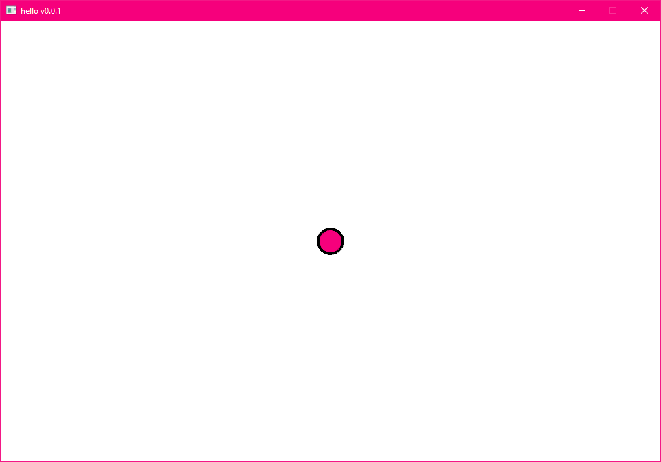
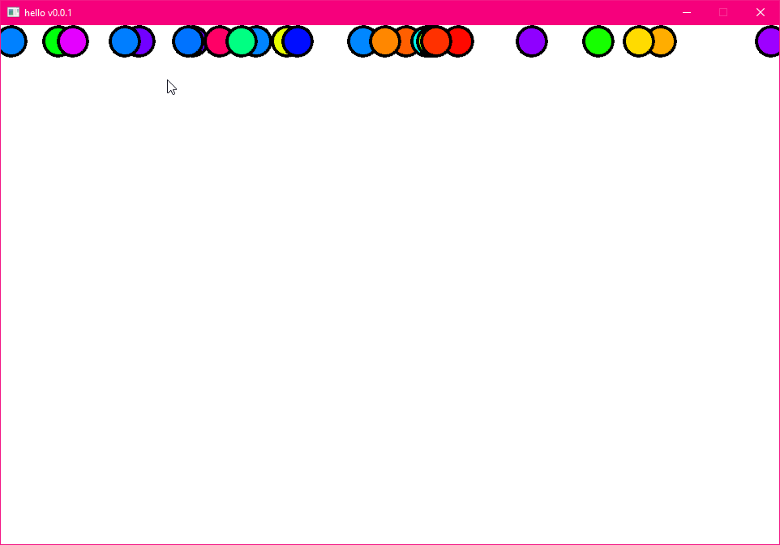
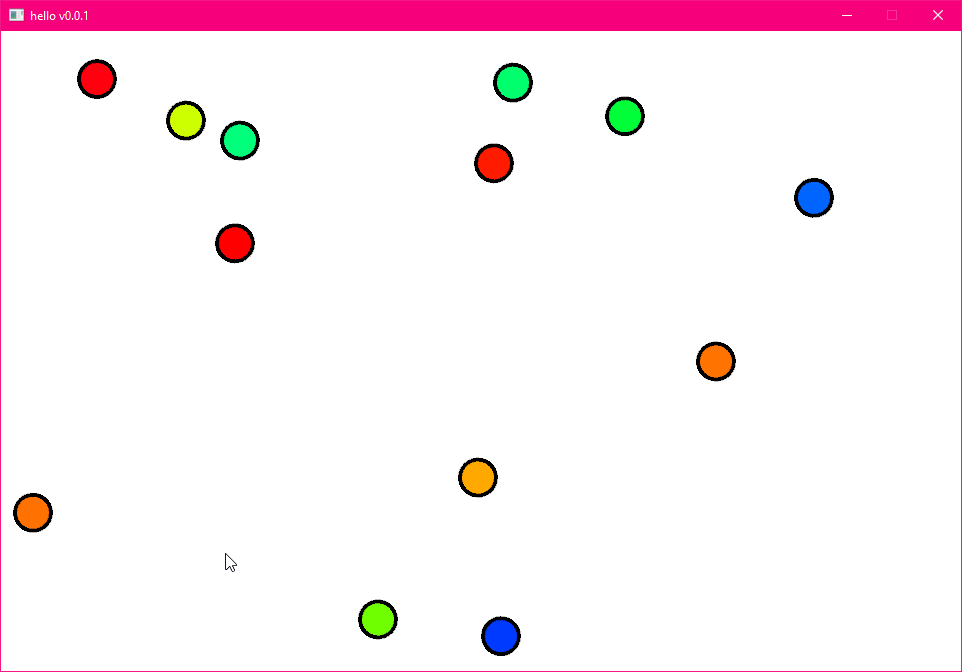
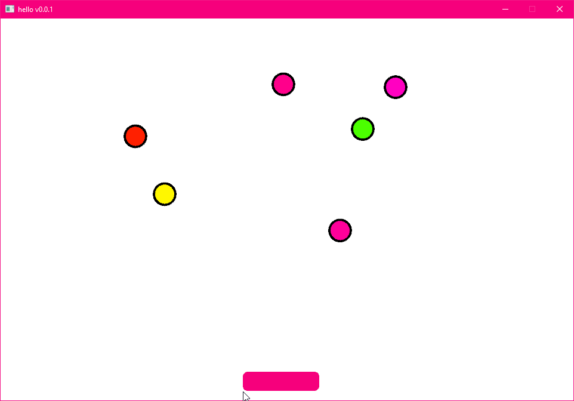
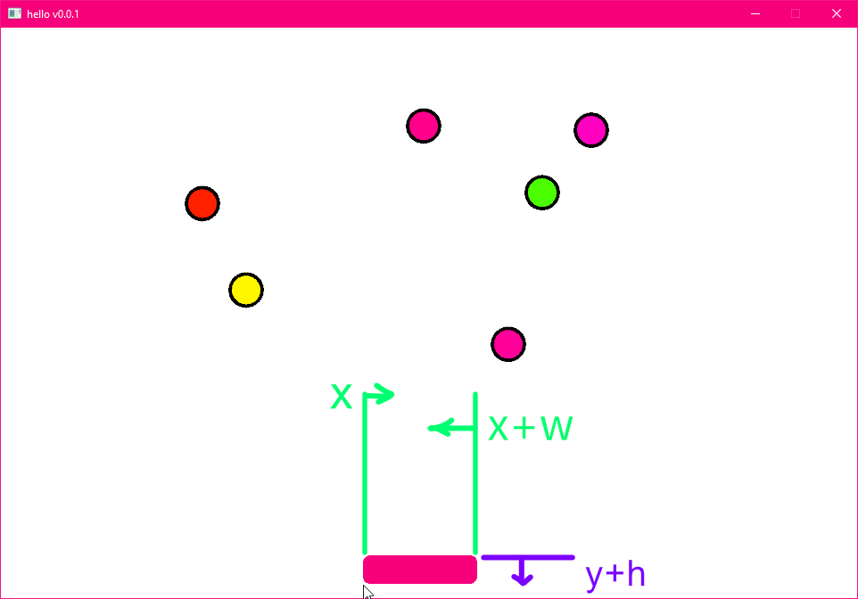
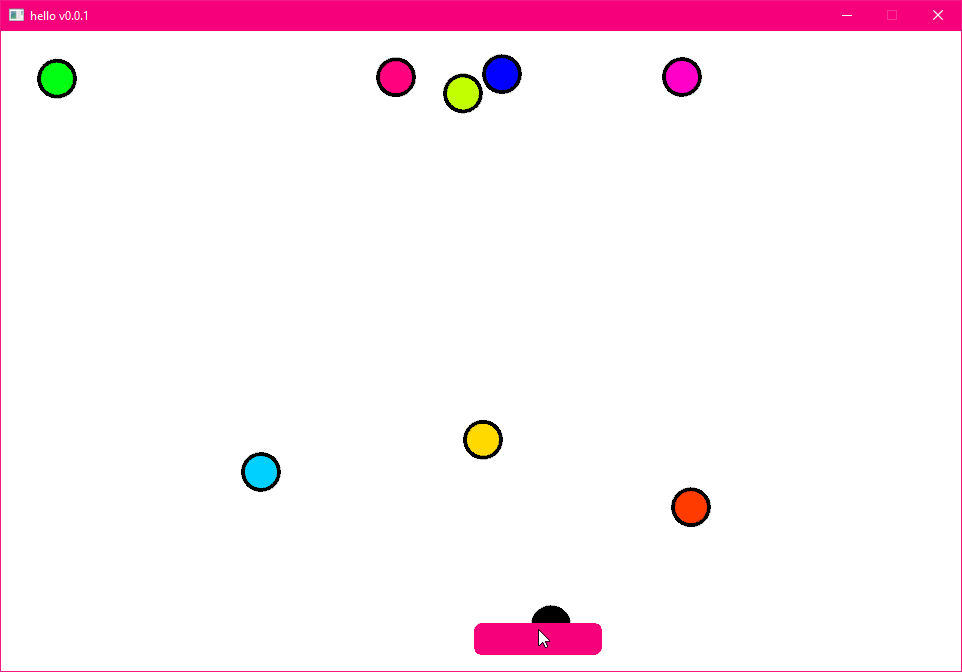

Draw + Input¶
Drawing primitives and handling basic input.
outcome
In this tutorial we'll use the Draw api to put something on screen.
We'll also use the Input Query API for handling prototype style input.
We'll make a simple game where pressing a key will drop
a pebble from a random position at the top of the screen.
The player will have to catch that pebble with the mouse.
Play it¶
Click first, then press Space to create pebbles.
Preparation¶
We'll continue from our empty project before, and make it even emptier. We'll take away the logo and the color changing background!
do this
Remove all of these highlighted lines from your game.wren file.
class Game is Ready {
var logo = Entity.none
construct ready() {
super("ready! %(width) x %(height) @ %(scale)x")
logo = Entity.create(world)
Transform.create(logo)
Sprite.create(logo, Assets.material("luxe: material/logo"), 128, 128)
} //ready
tick(delta: Num) {
Transform.set_pos(logo, mouse.x, mouse.y)
if(Input.key_state_released(Key.escape)) {
IO.shutdown()
}
color.r = color.g = color.b = (IO.timestamp()/40 % 0.15)
} //tick
} //Game
imports
When you want to use a tool (an API) in luxe, you need to import it first.
Since we're about to use the color API, we'll add an import for it at the top of our game.wren file
with the other imports.
import "luxe: color" for Color
Next, we'll add one line to the background color, and this is what it should look like:
class Game is Ready {
construct ready() {
super("ready! %(width) x %(height) @ %(scale)x")
color = Color.white
} //ready
tick(delta: Num) {
if(Input.key_state_released(Key.escape)) {
IO.shutdown()
}
} //tick
} //Game
Game variables¶
Our game is going to need a few variables to store information, so let's create some. Class variables go before anything else in the class (after the first {) and look like this:
var name: Type = value
The type is optional, as it can know the type of a lot of the time. For example, var number = 3 will show up as var number: Num = 3 with what is called an "inlay hint" telling you it knows that number is well, a number!
Add a variable called pebbles, as a list. The syntax for a list is [] which just means, a list with nothing in it (yet).
We'll also add one for our drawing context, which we'll talk about next.
And lastly, we need a random number generator. Let's make one right here, because you can run code to initialize values.
variables must be initialized to some value!
class Game is Ready {
//A list of pebbles on screen
var pebbles: List = []
//Our drawing context
var draw: Draw = null
//A random number generator
var random = Random.new()
construct ready() {
import random
Before this code will run, we need to import the random module from Wren.
This one module is a bit different and is imported as
import "random" for Random
Add this line at the top of your file.
The Draw tool¶
With luxe, there are a bunch of tools and services available to quickly explore ideas and try things out.
One of those, is called Draw, it provides shape drawing, text drawing and more. It can be used for debug visualization, for whole games, and for immediate or cached rendering both.
Creating a Draw context¶
A context is a bit like a canvas, it remembers the things you drew, and when you're done you can commit the changes to it, which will display it. To create one, we'll have to ask the world for a render set - something you'll learn more about in future - but for now, this is how you do it.
Add a line that initializes our draw variable, to a new Draw context.
construct ready() {
super("ready! %(width) x %(height) @ %(scale)x")
color = Color.white
draw = Draw.create(World.render_set(world))
} //ready
The tick method¶
The tick method in our class is called once every frame the game runs. In here, we can do things like, draw our pebbles, check if they went off screen or hit the player, and check if there was any input.
To explore this, let's draw a pebble in the middle of the screen.
tick(delta: Num) {
var x = width / 2
var y = height / 2
var z = 0
var radius = 16
var smooth = 6
Draw.circle(draw, x, y, z, radius+4, smooth, Color.black)
Draw.circle(draw, x, y, z, radius, smooth, Color.pink)
if(Input.key_state_released(Key.escape)) {
IO.shutdown()
}
Draw.commit(draw)
} //tick

ideas to try
- Try using
mouse.xandmouse.yas the x and y values. - What happens if you comment out the commit line? like this:
// Draw.commit(draw)
We can remove this code from tick for now, as we'll build up our game code next.
The game code¶
To start with our game code, we'll block out a few lines of code:
- Add an empty
create_pebbleandupdate_pebblesmethod - Add an empty
update_playermethod - Check if the player pressed the Space key, call
create_pebble() - call
update_pebblesto make them move - commit our Draw context
First add create_pebble as an empty method. This is where we will add our code later. And hey, we can already see how to query if a key was released! Let's copy that and and call our new method.
Add the highlighted code changes
create_pebble() {}
update_pebbles(delta: Num) {}
update_player() {}
tick(delta: Num) {
if(Input.key_state_released(Key.space)) {
create_pebble()
}
update_pebbles(delta)
update_player()
Draw.commit(draw)
if(Input.key_state_released(Key.escape)) {
IO.shutdown()
}
} //tick
Creating a pebble¶
Since we're making a simple game in one file, we can use a simple class in the same file to represent a pebble. A pebble is just a few values for now, so just above our game class, we'll add a pebble class:
class Pebble {
var x = 0
var y = 0
var speed = 20
var color = Color.pink
var active = true
construct new() {}
}
class Game is Ready {
Another tool we have in luxe, is the Log.print() API, which allows to write information into the log window (and file). This can be very handy for debugging values and figuring out what's happening in our code.
using %( ) we can insert variables into a string to see their contents. This is called string interpolation
Let's fill in the blank create_pebble() method we made!
Add the highlighted code changes
create_pebble() {
var pebble = Pebble.new()
// set it up using a random color,
// and a random position on the top of the screen
pebble.color = Color.color_from_hue(random.float())
pebble.speed = random.int(20, 150)
pebble.x = random.int(width)
pebble.y = height - 8
// add to the list of pebbles
pebbles.add(pebble)
Log.print("creating a pebble at `%(pebble.x) , %(pebble.y)`...")
} //create_pebble
Drawing the pebbles¶
If we ran that code, and press space bar, we'd see the log message but no pebbles yet. Let's redo our drawing inside update_pebbles but this time, we'll draw the pebbles in our list using a for loop, as we'll see.
Add the highlighted code changes
update_pebbles(delta: Num) {
var z = 0
var radius = 16
var smooth = 6
for(pebble: Pebble in pebbles) {
Draw.circle(draw, pebble.x, pebble.y, z, radius+4, smooth, Color.black)
Draw.circle(draw, pebble.x, pebble.y, z, radius, smooth, pebble.color)
}
} //update_pebbles
for loop
A for loop will run the code inside the { } for each pebble in the list. If there are none in the list, nothing happens
We added a pebble: Pebble to our loop variable, this gives us code completion on the pebble variable
This is how it should look, after hitting Space a bunch of times.

Moving the pebbles¶
Now we can update our pebbles to fall downward.
To do this, we'll move the y position of our pebble every update, by pebble.speed amount.
delta time (detailed video on the concept)
When we do y = y - speed the value is in world units. We're moving speed world units every update.
How often does it update? We don't know, it depends on the computer it is running on!
In our empty project, world units = window pixel, so we could say it moves at 20 pixels every update.
What we really want is this value to be the same for every player, we want 20 pixels per second instead.
To do that, we use that delta variable we handed to our method.
If we multiply speed by delta time, we get units per second instead of just units.
Add the highlighted line
update_pebbles(delta: Num) {
var z = 0
var radius = 16
var smooth = 6
for(pebble: Pebble in pebbles) {
pebble.y = pebble.y - (pebble.speed * delta)
Draw.circle(draw, pebble.x, pebble.y, z, radius+4, smooth, Color.black)
Draw.circle(draw, pebble.x, pebble.y, z, radius, smooth, pebble.color)
}
}
And now the pebbles fall!

Player paddle¶
The player will be a rectangle near the bottom of the screen, and will try to catch the falling pebbles with their paddle. Let's start with drawing the player.
Add the highlighted code changes
update_player() {
//player width and height
var w = 128
var h = 32
//centered on the mouse
var x = (mouse.x - w/2)
//stop at the right edge of the window
x = x.min(width - w)
//stop at the left edge of the window
x = x.max(0)
var y = 16
var z = 0
var angle = 0
var radius = [8,8,8,8]
var smooth = [4,4,4,4]
Draw.quad_detailed(draw, x, y, z, w, h, angle, radius, smooth, Color.pink)
} //update_player

Player collision¶
Nothing happens when the pebbles hit the player, so we'll have to add a check for that. We're going to keep it really simple and do basic checks to see if the pebble would be overlapping with the player.
Here's how we'll approach it:
- If the pebble x > player x
- and pebble x < player x + player width
- we know that the pebble is in line with the player horizontally.
- Now we just need to know if the pebble y < player y + player height

We'll mark the pebble as inactive so we can ignore it next time.
Add the highlighted lines, at the end of update_player()
update_player() {
... //player drawing
for(pebble: Pebble in pebbles) {
var inside_x = pebble.x >= x && pebble.x <= x + w
var inside_y = pebble.y <= y + h
var was_collected = pebble.active && inside_x && inside_y
if(was_collected) {
pebble.color = Color.black
pebble.active = false
}
} //for each pebble
} //update_player
And with that, we can see the pebbles turn black when we collect them. Next we'll clean up pebbles we've collected or that have hit the ground below the player.

Pebble cleanup¶
We can easily tell when a pebble has been missed by using inside_y when inside_x is false. When that happens, we'll turn the pebble white instead of black.
And, when any pebble hits the edge of the screen, we'll remove it from the game.
Add the highlighted lines
update_player() {
... //player drawing
var to_remove = []
for(pebble: Pebble in pebbles) {
var inside_x = pebble.x >= x && pebble.x <= x + w
var inside_y = pebble.y <= y + h
var was_collected = pebble.active && inside_x && inside_y
var was_missed = pebble.active && inside_x == false && inside_y == true
var off_screen = pebble.y < -16
if(was_collected) {
pebble.color = Color.black
pebble.active = false
} else if(was_missed) {
pebble.color = Color.white
pebble.active = false
} else if(off_screen) {
to_remove.add(pebble)
}
} //for each pebble
for(pebble: Pebble in to_remove) {
pebbles.remove(pebble)
}
} //update_player
Try this¶
Add score
Add a score variable to the game class, add 1 to it each time a pebble is collected. Display the score using Draw.text and Asset.font("luxe: font/lato").
Add pause
Add a var paused = false boolean. This can stop the pebbles from moving and pause the game e.g if(paused) return. You can stop the player moving and display the paused state on screen.
Add game over
Add a losing condition, like if you have 5 lives and each time you miss, you lose one. When you have 0, display a game over message. You'll probably want to want make Space key restart the game, which will require resetting the state and pebbles.clear()
Add win state
Add a win condition, like if you collect 20 pebbles or survive for a certain amount of time. You can use IO.timestamp() to get a time in seconds and display it (once at the beginning of the game and then now - start)
Automatic pebbles
Try making a var timer = 0 and if(timer_ready) { create_pebble() } with a random time value each time. The random time can get faster the more you play.
Full code¶
import "luxe: draw" for Draw, PathStyle
import "luxe: world" for World, TextAlign
import "luxe: color" for Color
import "luxe: input" for Input, Key
import "luxe: asset" for Asset
import "luxe: io" for IO
import "random" for Random
import "outline/ready" for Ready
class Pebble {
var x = 0
var y = 0
var speed = 10
var color = Color.pink
var active = true
construct new() {}
}
class Game is Ready {
//A list of pebbles on screen
var pebbles: List = []
//Our drawing context
var draw: Draw = null
//A random number generator
var random = Random.new()
construct ready() {
super("ready! %(width) x %(height) @ %(scale)x")
color = Color.white
draw = Draw.create(World.render_set(world))
} //ready
create_pebble() {
var pebble = Pebble.new()
//set it up using a random color,
//and a random position on the top of the screen
pebble.color = Color.color_from_hue(random.float())
pebble.speed = random.int(20, 150)
pebble.x = random.int(width)
pebble.y = height - 20
//add to the list of pebbles
pebbles.add(pebble)
Log.print("creating a pebble at `%(pebble.x) , %(pebble.y)`...")
} //create_pebble
update_pebbles(delta: Num) {
var z = 0
var radius = 16
var smooth = 6
for(pebble: Pebble in pebbles) {
pebble.y = pebble.y - (pebble.speed * delta)
Draw.circle(draw, pebble.x, pebble.y, z, radius+4, smooth, Color.black)
Draw.circle(draw, pebble.x, pebble.y, z, radius, smooth, pebble.color)
}
} //update_pebbles
update_player() {
//player width and height
var w = 128
var h = 32
//centered on the mouse
var x = (mouse.x - w/2)
//stop at the right edge of the window
x = x.min(width - w)
//stop at the left edge of the window
x = x.max(0)
var y = 16
var z = 0
var angle = 0
var radius = [8,8,8,8]
var smooth = [4,4,4,4]
Draw.quad_detailed(draw, x, y, z, w, h, angle, radius, smooth, Color.pink)
var to_remove = []
for(pebble: Pebble in pebbles) {
var inside_x = pebble.x >= x && pebble.x <= x + w
var inside_y = pebble.y <= y + h
var was_collected = pebble.active && inside_x && inside_y
var was_missed = pebble.active && inside_x == false && inside_y == true
var off_screen = pebble.y < -16
if(was_collected) {
pebble.color = Color.black
pebble.active = false
} else if(was_missed) {
pebble.color = Color.white
pebble.active = false
} else if(off_screen) {
to_remove.add(pebble)
}
}
for(pebble: Pebble in to_remove) {
pebbles.remove(pebble)
}
} //update_player
tick(delta: Num) {
if(Input.key_state_released(Key.space)) {
create_pebble()
}
update_pebbles(delta)
update_player()
Draw.commit(draw)
if(Input.key_state_released(Key.escape)) {
IO.shutdown()
}
} //tick
} //Game